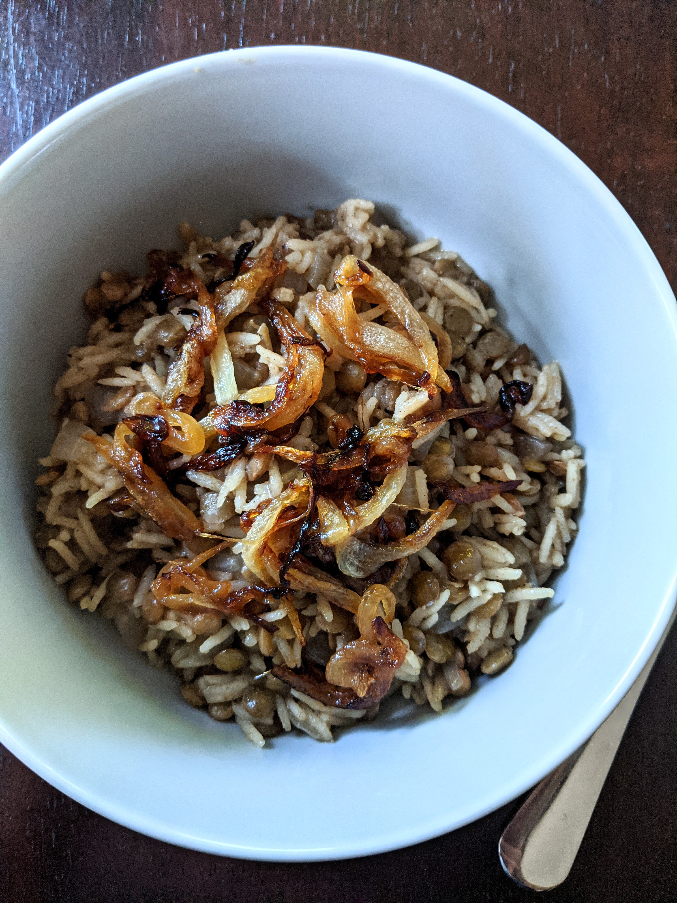
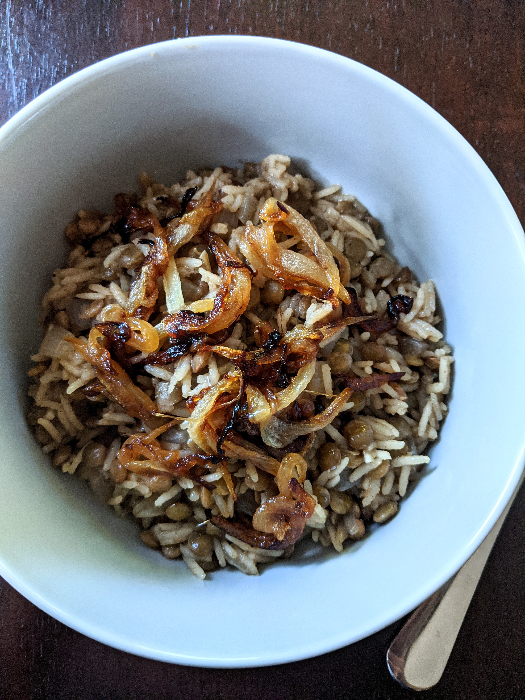

Palestinian Mujadara
Mujadara is a dish from the Arab Mashreq, which is famous for Syria, Lebanon, Jordan, Palestine and Iraq. Its main ingredients are lentils and rice. It is a traditional Arabic food.
Mujadara is a dish from the Arab Mashreq, which is famous for Syria, Lebanon, Jordan, Palestine and Iraq. Its main ingredients are lentils and rice. It is a traditional Arabic food.
